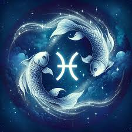

Овен
Це знак Зодіаку володіє тонкою інтуїцією і проникливістю. Овен має безліч талантів, про які сам не здогадується. Завдяки їх сукупності він досягає успіху у своїй сфері і зачаровує людей. Хоч характер в Овнів не найпростіший, але це не заважає їм мати багато друзів і легко заводити знайомства.
Телець
Тельці - найнадійніші друзі, яких може подарувати вам доля. Заради своїх близьких цей знак піде на все. Дорослі Тельці залишаються відданими своїм батькам, і самі є відмінними мамами і батьками.
Близнюки
Близнюки можуть похвалитися гострим розумом і вмінням знайти вихід в будь-якій ситуації. Вони впевнені у своєму успіху і легко беруться за нові справи - і все виходить. Близнюки - прекрасні начальники і бізнесмени. Ще один плюс цього знака - гарне почуття гумору.
Рак
Раки дуже відповідально підходять до всього, що роблять. Цьому знаку вкрай важливо не підвести близьких і добре себе проявити. У робочих питаннях і важких ситуаціях, Ракам можна довіритися на 100%. Навіть якщо Рак здається холоднокровним, насправді він важко переживає невдачі.

Лев
Хочете розслабитися і зарядитися хорошим настроєм? Поспілкуйтеся з Левом. Цей знак ніколи не буде плакати вам в жилетку і вантажити своїми проблемами. Спілкуватися з ним дуже легко і приємно. Леви вміють робити делікатні компліменти і дають хороші поради.
Діва
Дівам важливо розвиватися у своїй сфері, бути хорошим фахівцем і надійною людиною. Ці люди мають високі вимоги до себе, через що постійно ростуть над собою. Якщо цей знак поставив перед собою мету-то обов'язково її досягне, навіть якщо підуть роки.
Терези
Терези помічають дуже багато деталей, хоч і не завжди про них говорять. Вони завжди читають атмосферу в колективі і відчувають настрій в колективі. Вони знають як вдало пожартувати або втішити засмученого друга. Терези ніколи не стануть прикро жартувати або маніпулювати близькими.
Скорпіон
Скорпіон - це та людина, яка вміє визнавати свої помилки і вибачатися, а значить, постійно росте над собою. Скорпіон - сильний боєць, який з великою стійкістю переживає будь-які труднощі. Цей знак любить пригоди і не дасть вам занудьгувати.
Стрілець
Стрільці мають безліч хобі і талантів. Спілкуватися з ними дуже цікаво і приємно. Цей знак має сильне почуття прекрасного, він прагне до комфорту і оточує себе інтелігентними людьми. Знайомих Стрільця вражає ерудованість цього знака і прагнення до мрії.
Козоріг
Козероги люблять поговорити, але вони зовсім не базіки. Розмовляти з ними легко і цікаво. Козероги завжди намагаються вірити в краще і заряджають рідних позитивом. Представники цього знака часто приймають людей такими, якими вони є. Вони терплячі до чужих недоліків.
Водолій
Водолії впевнені в собі, але не самовпевнені. Вони справляють враження надійних людей, яким можна довірити складне завдання. Вони вміють зберігати секрети і ніколи не прикрашають свої можливості. Вони знають, що роблять, мають багато запасних планів - і цим зачаровують людей.
Риби
У цього знака Зодіаку сильно розвинена емпатія - вміння співпереживати іншим і відчувати чужі емоції. Риби дуже втягуються в справи близьких і вміють тактовно і ненав'язливо підтримати рідних. Якщо попросити у Риб допомоги серед ночі - вони відразу примчать до вас.
